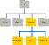
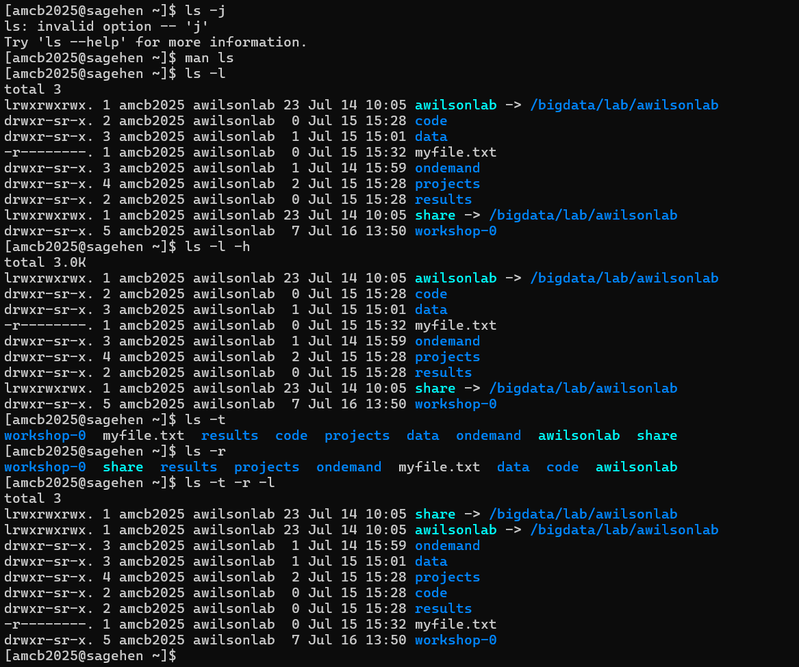
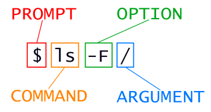

Exploring File Systems and Path Navigation
Last updated on 2026-08-25 | Edit this page
Estimated time: 40 minutes
Overview
Questions
- What methods are available for navigating through my computer?
- How can I view the files and directories I possess?
- What are the ways to identify the location of a file or directory on my computer?
Objectives
- Distinguish between a file and a directory, explaining their similarities and differences.
- Convert an absolute path to a relative path and vice versa.
- Create absolute and relative paths to pinpoint specific files and directories.
- Apply options and arguments to alter the behavior of a shell command.
- Show how to use tab completion and discuss its benefits.
Introducing the shell’s filesystem navigation (as detailed in the Navigating Files and Directories section) can be somewhat perplexing. It might be helpful to have both a terminal and a GUI file explorer open simultaneously. This allows learners to visually compare the file structure and content in the GUI with their actions in the terminal as they navigate the system.
The file system is a crucial part of the operating system that manages files and directories. It organizes data into files, which store information, and directories (also known as ‘folders’), which can contain files or other directories.
To manage these files and directories, several commands are commonly used for creation, inspection, renaming, and deletion. We’ll start exploring these by going to our open shell window.
Firstly, let’s determine our current location using the
pwd command, which stands for ‘print working directory’.
Think of directories as places; at any given moment in the
shell, we are situated in one specific place, our current
working directory. Most commands operate on files in the
current working directory, meaning ‘here’, so it’s crucial to know your
location before executing a command. The pwd command helps
you identify your current position.
OUTPUT
/Users/cecilHere, the computer’s response is /Users/cecil, which is
Cecil’s home directory:
Variations in Home Directory Paths
The appearance of the home directory path varies across different
operating systems. For instance, on Linux systems, it typically appears
as /home/cecil, whereas on Windows, it might look like
C:\Documents and Settings\cecil or
C:\Users\cecil. It’s important to note that there can be
slight variations in this path depending on the version of Windows you
are using. In our future examples, we’ll primarily use outputs from a
Mac as a standard reference. Outputs from Linux and Windows may have
minor differences but will generally be similar.
We’ll proceed with the assumption that when you execute the
pwd command, it shows your user’s home directory. If
pwd yields a different result, you might need to navigate
to your home directory using the cd command. Otherwise,
certain commands in this lesson might not function as described. For
additional information on using the cd command to explore
other directories, refer to the section Exploring Other Directories.
To grasp the concept of a ‘home directory’, it’s beneficial to first understand the overall structure of the file system. For illustrative purposes, we’ll examine the filesystem on our scientist Cecil’s computer. After this explanation, you’ll learn how to navigate your own filesystem, which will be structured similarly, though not exactly the same.
Here’s an overview of the filesystem on Cecil’s computer:
The filesystem can be visualized as an inverted tree. At the very top
is the root directory, which encompasses everything
underneath. This root directory is denoted by a solitary slash
/; it’s the same slash found at the beginning of
/Users/cecil.
Within this root directory are various subdirectories: -
bin (housing some built-in programs), - data
(for assorted data files), - Users (containing the personal
directories of users), - tmp (for temporary files not
requiring long-term storage), - among others.
We know that Cecil’s current working directory
/Users/cecil is a part of /Users because it
appears at the start of its path. Similarly, the presence of the leading
/ in /Users indicates that it resides within
the root directory.
Understanding the Slash /
It’s important to recognize the dual role of the /
character in file paths. When / is positioned at the
beginning of a file or directory name, it signifies the root directory.
However, when / is found within a path, it serves merely as
a separator between different levels in the directory structure.
Under /Users, there are directories for each user with
an account on Cecil’s machine, including his colleagues Amelia
and Raj.

The files belonging to the user Amelia are located in
/Users/amelia, Raj’s files are in
/Users/raj, and Cecil’s are in /Users/cecil.
In our examples, Cecil is our primary user, so /Users/cecil
is our home directory. Usually, when you open a new command prompt, you
start in your home directory.
Let’s now learn the command that allows us to view the contents of
our filesystem. We can see what’s in our home directory by running
ls:
OUTPUT
Applications Documents Library Music Public
Desktop Downloads Movies Pictures(Your results might vary slightly based on your operating system and any customizations you’ve made to your filesystem.)
The ls command displays the names of files and
directories in the current directory. We can make this output clearer by
using the -F option, which instructs
ls to add a specific marker to each file and directory name
to indicate its type:
- a trailing
/signifies a directory -
@denotes a link -
*marks an executable file
Depending on the settings of your shell, it might also use colors to distinguish files from directories.
OUTPUT
Applications/ Documents/ Library/ Music/ Public/
Desktop/ Downloads/ Movies/ Pictures/Here, we observe that the home directory comprises only sub-directories. Any names in the output lacking a classification symbol are files within the current working directory.
Tidying Up Your Terminal Screen
When your terminal becomes overly crowded, you can tidy it up with
the clear command. This cleans up the screen but doesn’t
erase your command history. You can still revisit your past commands by
using the ↑ and ↓ keys to navigate through them
one line at a time, or by simply scrolling in your terminal.
Discovering Command Help Options
The ls command, like many others, offers a variety of
options for its use. To learn about these options and
how to utilize a command, there are generally two methods, and the next
two sections cover each in turn: the --help option (Linux
and Git Bash) and the man command (Linux and macOS).
Depending on your system, you might find that only one of them is
applicable.
Assistance with Built-in Bash Commands
Certain commands are integrated directly into the Bash shell and
don’t exist as standalone programs in the filesystem. A common example
is the cd command, used for changing directories. If you
encounter a message such as No manual entry for cd, an
alternative is to use help cd. This help
command provides guidance on using the Bash
built-ins, which are the commands that are part of the shell
itself.
The --help option
The majority of Bash commands and programs designed for use in Bash
typically support a --help option. This feature provides
additional details on how to effectively utilize the command or
program.
OUTPUT
Usage: ls [OPTION]... [FILE]...
List information about the FILEs (the current directory by default).
Sort entries alphabetically if neither -cftuvSUX nor --sort is specified.
Mandatory arguments to long options are mandatory for short options, too.
-a, --all do not ignore entries starting with .
-A, --almost-all do not list implied . and ..
--author with -l, print the author of each file
-b, --escape print C-style escapes for nongraphic characters
--block-size=SIZE scale sizes by SIZE before printing them; e.g.,
'--block-size=M' prints sizes in units of
1,048,576 bytes; see SIZE format below
-B, --ignore-backups do not list implied entries ending with ~
-c with -lt: sort by, and show, ctime (time of last
modification of file status information);
with -l: show ctime and sort by name;
otherwise: sort by ctime, newest first
-C list entries by columns
--color[=WHEN] colorize the output; WHEN can be 'always' (default
if omitted), 'auto', or 'never'; more info below
-d, --directory list directories themselves, not their contents
-D, --dired generate output designed for Emacs' dired mode
-f do not sort, enable -aU, disable -ls --color
-F, --classify append indicator (one of */=>@|) to entries
... ... ...Handling Unsupported Command-Line Options
When you attempt to use a command-line option that isn’t recognized,
commands like ls typically respond with an error message.
For example, if you try an unsupported option with ls, it
would look something like this:
ERROR
ls: invalid option -- 'j'
Try 'ls --help' for more information.This response indicates that the option you tried is invalid and
suggests using the --help option to get more information
about the command.
Utilizing the man Command
Another method to learn about ls is by entering the
following command:
Executing this command transforms your terminal into a page
displaying a detailed description of the ls command and its
various options.
While navigating the man pages, you can move
line-by-line using ↑ and ↓. For quicker
navigation, B moves up a full page and Spacebar
moves down a full page. To search for a specific character or word
within the man pages, press / followed by your
search term. If your search yields multiple results, you can jump
between these occurrences with N (to go forward) and
Shift + N (to go backward).
To exit the man pages, simply press Q.
Accessing Manual Pages Online
Beyond the command-line, there’s a third method to find help for Unix
commands: using your web browser to search the internet. When searching
online, adding unix man page to your query can lead to more
pertinent results.
Additionally, GNU offers a comprehensive collection of manuals online. This includes the core GNU utilities, which provide detailed information on many of the commands discussed in this lesson.
Investigating Further Options in
ls
Try combining two options together.
What outcome does ls produce with the -l
option?
And what happens when you combine the -l option with the
-h option?
While some of the information provided by these options, like file permissions and ownership, isn’t covered in this lesson, the remaining details can still be quite informative.
Using the -l option with ls enables a
long format listing. This doesn’t just show the names
of files or directories but also additional details like file size and
the time of the last modification. When you use -h along
with -l, it formats the file size in a
‘human readable’ manner, presenting sizes like
5.3K instead of 5369.
Sorting Files by Last Modified in Reverse
Normally, ls sorts the contents of a directory
alphabetically by their names. However, if you use ls -t,
it sorts files by the time of their last modification, not
alphabetically. On the other hand, ls -r displays directory
contents in reverse order. What file appears last when you use both the
-t and -r options together? Tip: To view the
dates of last modifications, you might need to include the
-l option.

ls options on Sagehen: an
invalid option error, long and human-readable listings, and time/reverse
sorting — note the lab-storage symlinks pointing into
/bigdata/lab/.When combining -rt with ls, the file that
was most recently modified appears at the end of the list. This sorting
method is particularly useful for identifying the latest changes you’ve
made or for verifying whether a new output file has been created.
Navigating Across Different Directories
ls isn’t limited to just listing the contents of the
current working directory. We can also use it to explore the contents of
other directories. For example, let’s examine what’s in our
Desktop directory by using ls -F Desktop,
where ls is the command, -F is an
option, and Desktop is the argument.
The Desktop argument instructs ls to list
contents from a directory other than the current one:
OUTPUT
shell-lesson-data/If you don’t have a Desktop directory in your current
working directory, this command will result in an error. Typically, your
home directory contains a Desktop directory, which we
assume is the current working directory.
You should see a list of files and sub-directories in your Desktop
directory, including the shell-lesson-data directory
downloaded earlier. (In most graphical interfaces, the contents of the
Desktop directory appear as icons.)
Organizing files into hierarchically structured directories helps keep track of work. Just as piling hundreds of papers on a desk isn’t practical, keeping numerous files in the home directory can be equally chaotic.
Knowing that shell-lesson-data is on our Desktop, we can
do two things:
First, we can view its contents with ls, passing the
directory name as an argument:
OUTPUT
exercise-data/ gobekli-tepe-excavation/Second, we can change our current directory. The command
cd, followed by a directory name, changes our working
directory. cd stands for ‘change directory’. It doesn’t
change the directory itself but changes the shell’s setting of our
current directory.
To navigate into the exercise-data directory seen above,
use these commands:
These commands take us from the home directory to the Desktop, then
into shell-lesson-data, and finally into
exercise-data. Note that cd doesn’t produce
output when successful. Running pwd after cd
shows we are now in
/Users/cecil/Desktop/shell-lesson-data/exercise-data.
OUTPUT
/Users/cecil/Desktop/shell-lesson-data/exercise-dataRunning ls -F without arguments now lists the contents
of
/Users/cecil/Desktop/shell-lesson-data/exercise-data:
OUTPUT
artifact-catalogs/ excavation-sites/ site-coordinates.txt pottery-types/ research-notes/To move up a directory (to its parent), you might think to use
cd shell-lesson-data, but this returns an error:
ERROR
-bash: cd: shell-lesson-data: No such file or directorycd only recognizes sub-directories within the current
directory. To move up, use:
.. is a shorthand for the parent directory. Running
pwd after cd .. takes us back to
/Users/cecil/Desktop/shell-lesson-data:
OUTPUT
/Users/cecil/Desktop/shell-lesson-dataTo see .. in the ls output, use the
-a option with ls -F:
OUTPUT
./ ../ exercise-data/ gobekli-tepe-excavation/-a (show all) reveals files and directories starting
with ., such as .. (the parent directory). It
also shows . (the current directory). These shortcuts are
useful in many scenarios.
Remember, command line tools often allow combining multiple options
into a single -, like ls -F -a being
equivalent to ls -Fa.
The fundamental commands for navigating your computer’s filesystem
are pwd, ls, and cd. Let’s delve
into some variations of these commands. What happens if you enter
cd without specifying a directory?
To verify what just occurred, use pwd:
OUTPUT
/Users/cecilIt turns out that entering cd without any argument takes
you back to your home directory. This is a quick way to return to a
familiar location if you find yourself lost within your filesystem.
Now, let’s go back to the exercise-data directory we
were in earlier. Previously, we navigated there using three separate
commands, but we can actually reach exercise-data directly
in a single step:
Verify your current location by running pwd and
ls -F.
To move up one level from the exercise-data directory,
we could use cd .., but there’s another method to navigate
to any directory, irrespective of your current position.
Until now, we’ve been using relative paths for
specifying directories. When a command like ls or
cd is paired with a relative path, it seeks that location
from our current spot, not from the filesystem’s root.
Alternatively, you can specify a directory’s absolute
path, which includes its full path starting from the root
directory. An absolute path is indicated by a leading slash
(/). This slash directs the system to trace the path from
the filesystem’s root, ensuring the path is unique regardless of your
current directory.
This method allows us to go back to our
shell-lesson-data directory from any location in the
filesystem, including from within exercise-data. To
determine the absolute path you need, use pwd to find your
current location and then navigate to
shell-lesson-data.
OUTPUT
/Users/cecil/Desktop/shell-lesson-data/exercise-dataConfirm your current directory by running pwd and
ls -F, making sure you’re where you intended to be.
- No:
.denotes the current directory. - No:
/is the root directory of the filesystem. - No: Amanda’s home directory is
/Users/amelia, not/home/amelia. - Yes: Moves up two levels, placing her in
/Users, one level above her home directory. - Yes:
~is a shortcut for the user’s home directory,/Users/ameliain this case. - No: This attempts to access a
homedirectory within the current directory, not the user’s home. - Yes: A roundabout method, but it effectively moves to
~/datathen up one level to~/. - Yes: A direct shortcut to the user’s home directory.
- Yes: Moves up one directory level to
/Users/amelia.
Understanding Relative Path Commands
Referencing the filesystem diagram provided, if the current directory
shown by pwd is /Users/thing, what output will
the command ls -F ../backup produce?
../backup: No such file or directory2012-12-01 2013-01-08 2013-01-272012-12-01/ 2013-01-08/ 2013-01-27/original/ pnas_final/ pnas_sub/

- No: There is indeed a
backupdirectory at/Users. - No: These are the contents of
/Users/thing/backup, but..goes one level up. - No: Same as above;
..takes us to a higher directory level. - Yes:
../backup/refers to thebackupdirectory at/Users/backup/.
Understanding ls with Reverse
Order
Consider the filesystem diagram provided. If pwd shows
/Users/backup, and the -r option makes
ls list items in reverse order, which command(s) would
produce the following output?
OUTPUT
pnas_sub/ pnas_final/ original/
1. ls pwd 2. ls -r -F 3.
ls -r -F /Users/backup
- No:
pwdis not a directory, but a command that prints the working directory. - Yes: Using
lswithout a directory argument lists the contents of the current directory in reverse order. - Yes: This explicitly specifies the absolute path to list in reverse order.
Breaking Down a Shell Command’s Structure
As we delve deeper into shell commands, options, and arguments, it’s beneficial to clarify some terminology using a structured approach.
Let’s examine the following example of a shell command and dissect its components:

In this example, ls is the command.
It’s accompanied by an option, -F, and an
argument, /. Options often begin with a
single dash (-), known as short options,
or a double dash (--), referred to as long
options. [Options] modify how a command operates, while Arguments
specify the objects (like files or directories) the command should act
upon. Sometimes, both options and arguments are collectively called
parameters. Commands can be used with multiple options
and arguments, but they don’t always need to have either.
Options are sometimes called switches or flags, especially when they don’t require an additional argument. In this lesson, however, we’ll stick to the term option.
Spacing is crucial: each part of the command is separated by spaces.
Forgetting a space, like writing ls-F, makes the shell look
for a command that doesn’t exist. Also, be aware that capitalization
matters. For instance, ls -s shows the size of files,
whereas ls -S sorts files by size. Here’s an example:
OUTPUT
total 28
4 artifact-catalogs 4 excavation-sites 12 site-coordinates.txt 4 pottery-types 4 research-notesNote that ls -s shows sizes in blocks, which
vary between different operating systems, so your output might differ
from the example.
OUTPUT
artifact-catalogs excavation-sites pottery-types research-notes site-coordinates.txtTo summarize, our command ls -F / provides a list of
files and directories in the root directory /. An example
output from this command could be:
OUTPUT
Applications/ System/
Library/ Users/
Network/ Volumes/Deciding Between Short and Long Command Options
When you have the choice of using either short or long options for command-line operations:
- When typing commands directly into the shell, use short options. This strategy minimizes keystrokes and speeds up your workflow.
- For scripting purposes, lean towards long options. They provide better clarity and enhance readability, which is crucial as scripts are typically read more frequently than they are written.
Cecil’s Pipeline: File Organization
With his knowledge of files and directories, Cecil is set to organize the upcoming files from the protein assay machine.
He creates a directory named gobekli-tepe-excavation,
reminding him of the data’s origin. This directory will house both the
data files from the assay machine and his data processing scripts.
Each of Cecil’s samples carries a unique ten-character ID following
his lab’s system, such as ‘NENE01729A’. He utilized this ID in his
collection log to note the sample’s location, time and other details.
Thus, he decides to incorporate these IDs into the filenames of each
data file. Given that the assay machine outputs plain text, he names his
files NENE01729A.txt, NENE01812A.txt, and so
on, with all 1520 files going into the same directory.
Now, in his current directory shell-lesson-data, Cecil
can view his files with the command:
While this command is a bit lengthy, Cecil can use tab completion to let the shell do most of the typing. If he types:
and presses Tab, the shell completes the directory name:
Pressing Tab again doesn’t change the output, as multiple possibilities exist. However, pressing Tab twice will list all the files.
If Cecil then types a and presses Tab, the shell will add ‘ancient’ because both script names start with those characters:
To display these files, he can press Tab twice again:
This feature is known as tab completion and is a common convenience across many shell tools.
- The file system is responsible for managing information on the disk.
- Information is stored in files, which are stored in directories (folders).
- Directories can also store other directories, which then form a directory tree.
-
pwdprints the user’s current working directory. -
ls [path]prints a listing of a specific file or directory;lson its own lists the current working directory. -
cd [path]changes the current working directory. - Most commands take options that begin with a single
-. - Directory names in a path are separated with
/on Unix, but\on Windows. -
/on its own is the root directory of the whole file system. - An absolute path specifies a location from the root of the file system.
- A relative path specifies a location starting from the current location.
-
.on its own means ‘the current directory’;..means ‘the directory above the current one’.